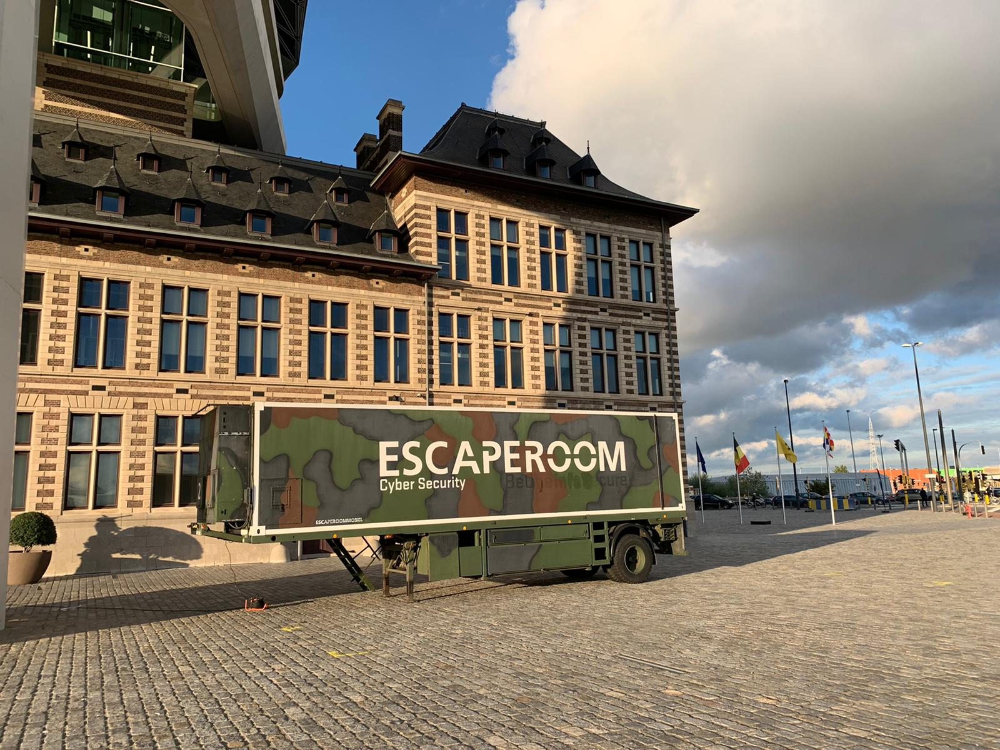
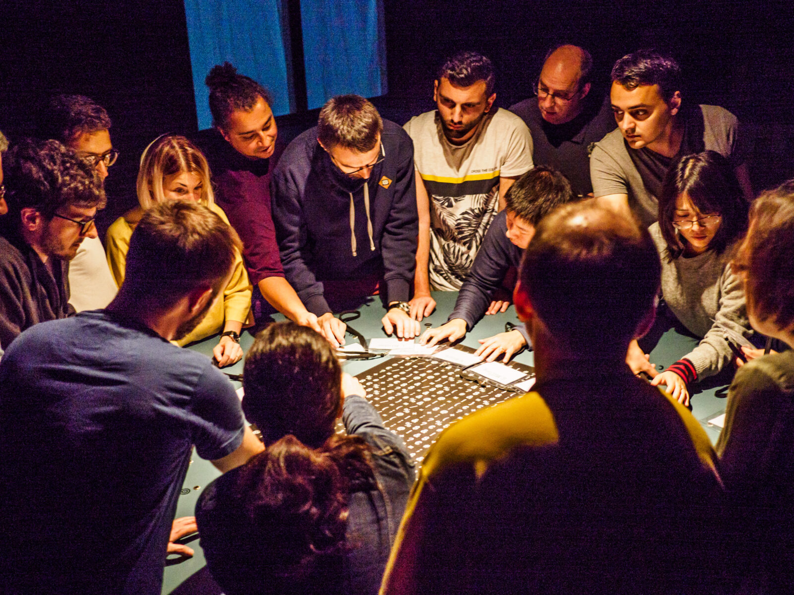

Assassin's Creed Valhalla
Assassin's Creed Valhalla is een action-adventurespel in ontwikkeld door Ubisoft Montreal. Het spel werd uitgegeven op 10 november 2020 door Ubisoft voor Microsoft Windows, PlayStation 4, Xbox One, Xbox Series X, en Stadia. Op 12 november 2020 werd het spel ook op PlayStation 5 speelbaar. Wikipedia.

witcher
Witcher is een computerspelserie ontwikkeld en uitgegeven door CD Projekt RED. Internationaal zijn de spellen uitgegeven door Atari. De spellen zijn gebaseerd op de verfilmde kortverhalen- en boekenserie Saga o wiedźminie van fantasyschrijver Andrzej Sapkowski. Wikipedia
